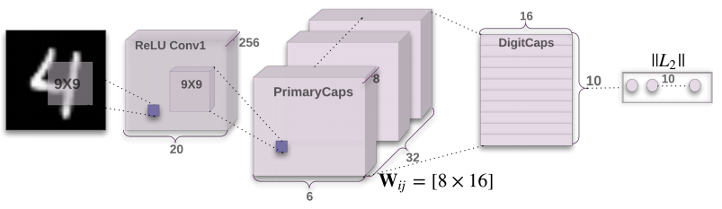
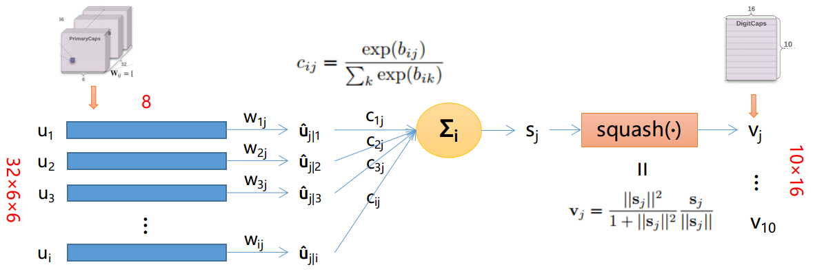
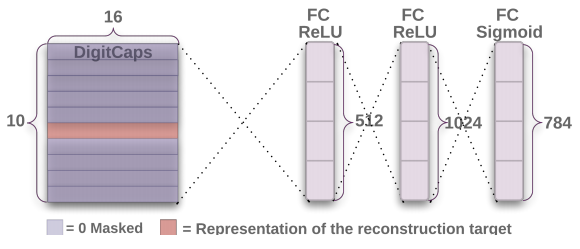
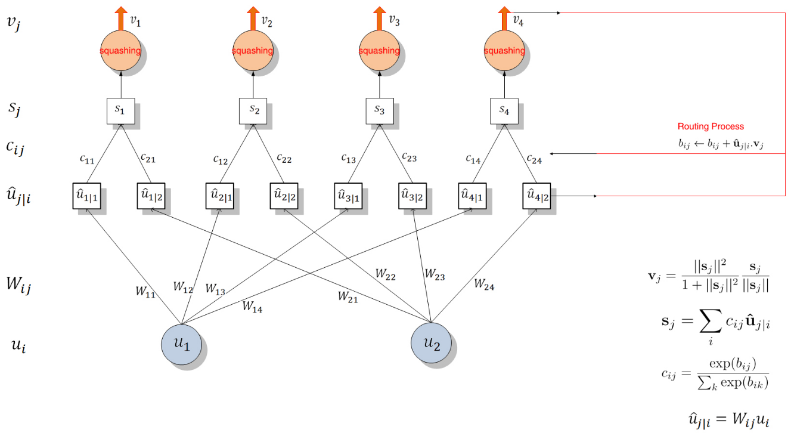

Intro
- 联系方式：wjy.f@qq.com
由于涉及比较多的公式，而github不支持MathJax或者LaTeX，所以如果想获得更好的阅读体验请安装chrome插件GitHub with MathJax，或者有更好的方法恳请告知。
本文记录了阅读论文《Dynamic Routing Between Capsules》以及naturomics的代码的理解与收获，若有错误欢迎指出。转载请注明出处。
由于代码基本上都是按照文章思路来写的，所以为了不重复讲解，会在采取内容与代码一起讲解的形式。
若想通过视频快速了解，可以看看下面两个链接，讲得比较生动易理解（不过还是推荐读论文）：
Main
何为Capsule
Hinton早在2011年已经提出了Capsule
CapsNet
结构概述
论文仅仅是提出了一个可行的方案，目的是为了证明Capsule这个思想的可行性，目前还较为粗略，有很多改进空间。论文有两个比较突出的创新点：
- 采用 routing-by-agreement mechainsm 决定两层capsule之间的连接以及参数$c_{ij}$的更新方式
- 用向量输出替代标量输出
下图是论文中所采用的神经网络结构：

看完这幅图应该大概能理解CapsNet的结构。它先是对图像用了两次卷积得到PrimaryCaps，然后用Routing-By-Agreement Mechanism得到DigitCaps。最后，求DigitCaps中的10个向量的长度，比如说最长的是第4个向量，那么就意味着CapsNet识别出当前输入的图片是数字4。
在下文中，若 i 指$layer_l$的某一个capsule ，那么 j 就是指$layer_{l+1}$的某一个capsule。
image to ReLU Conv1 to PrimaryCaps
论文使用的是MNIST手写识别数据集，每张图片的大小都是28*28。
流程：
- image(28 * 28)
- img $\to$
Conv(num_outputs=256, kernel_size=9, stride=1, padding='VALID') + ReLU$\to$ Conv1(256 * 20 * 20)
- Conv1 $\to$
Conv(num_outputs=256, kernel_size=9, stride=2, padding="VALID") + ReLU$\to$ PrimaryCaps(256 * 6 * 6)
这里可能会有人奇怪，这里不过是用了256个filter产生256个feature map，图片为什么会画成(32 * 8 * 6 * 6)的形式，这是因为后面的路由算法是将一个长度为8的向量当做一个整体来计算的。
PrimaryCaps to DigitCaps & Dynamic Routing
- 下面讲解从PrimaryCaps $\to$ DigitCaps的计算过程，其中主要应用了Routing-By-Agreement Mechanism
一张图表示他们之间的关系：

注意，图片中仅展示了一个$v_j,j\in(1,10)$的求解过程，其他$v_j$同理可得。
下面介绍其公式意义：
公式
- $u_i(i \in [6*6*32])$： 表示PrimaryCaps的某个8D的Capsule
- $\hat{u}_{j|i}$： 论文中称之为低一层的capsules的“prediction vectors”
- $b_{ij}$： 初始化为0，更新方法是 $b_{ij} \leftarrow b_{ij} + \hat{u}_{j|i} \cdot v_j$。 其中，$a_{ij} = \hat{u}_{j|i} \cdot v_j$ 表示 $capsule_j$（即$v_j$）跟 $capsule_i$ 的prediction vector（即$\hat{u}_{j|i}$）的agreement（契合度）。值越大，表示两个向量的方向越相似，两个向量所表示的性质越相近。由$c_{ij}$的公式知，$b_{ij}$ 的值越大（意味着两个向量的方向越相似），$c_{ij}$的值越大，$capsule_i$ 越倾向于将信息传送给 $capsule_j$ 。
- $c_{ij}$： 由动态路由算法更新的coupling coefficients，并且$\sum_{i}c_{ij} = 1$（此时$j$为某确定的常数）
- $s_j$： $capsule_j$ 的所有input之和。
- $squash()$： 非线性函数，保留了向量的方向，使长的向量越长，短的向量越短，并且长度都压缩在0-1之内
- $v_j$： 由dynamic routing计算出来的PrimaryCaps的output。在文章中就是指最后的输出DigitCaps，共有10个（因为有10个数字，即10类）Capsule。每个capsule有16维，每一维都代表着数字的某些属性（粗细、倾斜程度等等）。向量的长度代表了当前输入是类 $j$ 的概率。
Reconstruction
CapsNet使用Reconstruction作为Regularization。其做法是将DigitCaps的十个输出向量$v_j$中长度最长的向量，经过3个FC层（结构如下图所示）重构出原来的图像，通过对比重构的图像和原图像的差异(pixel-wise)，得到reconstruction loss。用来重构的这三个FC层一起称为Decoder。

Total loss
由于有多个类的存在，所以不能用cross entropy，论文中使用了SVM中常用的损失函数Margin loss来代替
Margin loss

-
k： class k，$k\in[1, 10]$
-
$m^+=0.9, m^-=0.1$ （自己设定）
-
$\lambda$ （比例系数，用来调整两者的比重）：
The λ down-weighting of the loss for absent digit classes stops the initial learning from shrinking the lengths of the activity vectors of all the digit capsules. We use λ = 0.5.
-
如果输入的数字图像是class k，那么$T_k=1$
-
示例 输入输出 $\|v_k\|$ $L_k$ TT 输入数字k 预测结果为数字k 比较大 比较小 TF 输入数字k 预测结果非数字k 比较小 比较大 FT 输入非数字k 预测结果为数字k 比较大 比较大 FF 输入非数字k 预测结果非数字k 比较小 比较小 -
可以看出，在假阳性和假阴性的示例中，$L_k$的值比较大。
Reconstruction loss
计算原图像与重构的图像在对应的pixel位置上的值之差，求和得到Reconstruction loss
将原图像x(28, 28)reshape成orgin(784) 再将重构的图像decoded(784) squared = square(decoded - orgin) reconstruction_loss = mean(squared)
即
最后：
Dynamic Routing算法流程

整个过程如下所示（图片来自naturomics的ppt）：

CapsNet与tradictional neuron的对比
（图片来自naturomics）：

这里写背景（为什么要这么构造模型，背后的神经科学知识)
见解
Routing-by-agreement有以下几个好处：
- 由于上一层的capsule会逐渐倾向于将信息传到下一层与它相似的capsule，这样就能够给下一层capsule干净清晰的信号，减少噪声，从而更快地学习到entity
- 通过追溯当前被激活的capsule的信号传输路径，我们可以操控part-whole中的part，并且清楚知道哪一个part属于哪一个entity（比如说识别一个由三角形和长方形组成的房屋，在$layer l$可能有个capsule是检测三角形，有个capsule检测长方形，则在$layer l+1$有能够得到检测房屋的capsule。此为ppart-whole的关系）。
- 可以很容易地解析重叠的entity，比如重叠的数字识别。
the capsules in the first layer try to predict what the second layer capsules will output
代码阅读
目录
CapsNet-Tensorflow
- capsLayer.py
定义了capsLayer的实现方法。
由于论文中提及的capsLayer有两种:
PrimaryCaps(without routing)
DigitCaps(with routing)
所以该文件里面也包含了这两种Layer的实现方式
另外，该文件还有:
routing
squash
- capsNet.py
定义了CapsNet类
包含：
build_arch() # 定义结构
loss() # 定义loss
- config.py
超参数设定
- main.py
程序入口
- utils.py
用于读取MNIST的数据
主要代码：
class CapsNet(object): def __init__(self, is_training=True): self.graph = tf.Graph() with self.graph.as_default(): if is_training: # 如果是在训练过程中 self.X, self.labels = get_batch_data() # 获取training data和label self.Y = tf.one_hot(self.labels, depth=10, axis=1, dtype=tf.float32) # 对label做onehot self.build_arch() # 搭建CapsNet的结构 self.loss() # 定义loss self._summary() # t_vars = tf.trainable_variables() self.global_step = tf.Variable(0, name='global_step', trainable=False) self.optimizer = tf.train.AdamOptimizer() # 使用AdamOptimizer self.train_op = self.optimizer.minimize(self.total_loss, global_step=self.global_step) # var_list=t_vars) elif cfg.mask_with_y: # 如果是已经训练完 self.X = tf.placeholder(tf.float32, shape=(cfg.batch_size, 28, 28, 1)) self.Y = tf.placeholder(tf.float32, shape=(cfg.batch_size, 10, 1)) self.build_arch() else: self.X = tf.placeholder(tf.float32, shape=(cfg.batch_size, 28, 28, 1)) self.build_arch() tf.logging.info('Seting up the main structure') def build_arch(self): with tf.variable_scope('Conv1_layer'): # Conv1, [batch_size, 20, 20, 256] conv1 = tf.contrib.layers.conv2d(self.X, num_outputs=256, kernel_size=9, stride=1, padding='VALID') assert conv1.get_shape() == [cfg.batch_size, 20, 20, 256] # Primary Capsules layer, return [batch_size, 1152, 8, 1] with tf.variable_scope('PrimaryCaps_layer'): primaryCaps = CapsLayer(num_outputs=32, vec_len=8, with_routing=False, layer_type='CONV') caps1 = primaryCaps(conv1, kernel_size=9, stride=2) assert caps1.get_shape() == [cfg.batch_size, 1152, 8, 1] # DigitCaps layer, return [batch_size, 10, 16, 1] with tf.variable_scope('DigitCaps_layer'): digitCaps = CapsLayer(num_outputs=10, vec_len=16, with_routing=True, layer_type='FC') self.caps2 = digitCaps(caps1) # Decoder structure in Fig. 2 # 1. Do masking, how: with tf.variable_scope('Masking'): # a). calc ||v_c||, then do softmax(||v_c||) # [batch_size, 10, 16, 1] => [batch_size, 10, 1, 1] self.v_length = tf.sqrt(tf.reduce_sum(tf.square(self.caps2), axis=2, keep_dims=True) + epsilon) self.softmax_v = tf.nn.softmax(self.v_length, dim=1) assert self.softmax_v.get_shape() == [cfg.batch_size, 10, 1, 1] # b). pick out the index of max softmax val of the 10 caps # [batch_size, 10, 1, 1] => [batch_size] (index) self.argmax_idx = tf.to_int32(tf.argmax(self.softmax_v, axis=1)) assert self.argmax_idx.get_shape() == [cfg.batch_size, 1, 1] self.argmax_idx = tf.reshape(self.argmax_idx, shape=(cfg.batch_size, )) # Method 1. if not cfg.mask_with_y: # c). indexing # It's not easy to understand the indexing process with argmax_idx # as we are 3-dim animal masked_v = [] for batch_size in range(cfg.batch_size): v = self.caps2[batch_size][self.argmax_idx[batch_size], :] masked_v.append(tf.reshape(v, shape=(1, 1, 16, 1))) self.masked_v = tf.concat(masked_v, axis=0) assert self.masked_v.get_shape() == [cfg.batch_size, 1, 16, 1] # Method 2. masking with true label, default mode else: # self.masked_v = tf.matmul(tf.squeeze(self.caps2), tf.reshape(self.Y, (-1, 10, 1)), transpose_a=True) self.masked_v = tf.multiply(tf.squeeze(self.caps2), tf.reshape(self.Y, (-1, 10, 1))) self.v_length = tf.sqrt(tf.reduce_sum(tf.square(self.caps2), axis=2, keep_dims=True) + epsilon) # 2. Reconstructe the MNIST images with 3 FC layers # [batch_size, 1, 16, 1] => [batch_size, 16] => [batch_size, 512] with tf.variable_scope('Decoder'): vector_j = tf.reshape(self.masked_v, shape=(cfg.batch_size, -1)) fc1 = tf.contrib.layers.fully_connected(vector_j, num_outputs=512) assert fc1.get_shape() == [cfg.batch_size, 512] fc2 = tf.contrib.layers.fully_connected(fc1, num_outputs=1024) assert fc2.get_shape() == [cfg.batch_size, 1024] self.decoded = tf.contrib.layers.fully_connected(fc2, num_outputs=784, activation_fn=tf.sigmoid) def loss(self): # 1. The margin loss # [batch_size, 10, 1, 1] # max_l = max(0, m_plus-||v_c||)^2 max_l = tf.square(tf.maximum(0., cfg.m_plus - self.v_length)) # max_r = max(0, ||v_c||-m_minus)^2 max_r = tf.square(tf.maximum(0., self.v_length - cfg.m_minus)) assert max_l.get_shape() == [cfg.batch_size, 10, 1, 1] # reshape: [batch_size, 10, 1, 1] => [batch_size, 10] max_l = tf.reshape(max_l, shape=(cfg.batch_size, -1)) max_r = tf.reshape(max_r, shape=(cfg.batch_size, -1)) # calc T_c: [batch_size, 10] # T_c = Y, is my understanding correct? Try it. T_c = self.Y # [batch_size, 10], element-wise multiply L_c = T_c * max_l + cfg.lambda_val * (1 - T_c) * max_r self.margin_loss = tf.reduce_mean(tf.reduce_sum(L_c, axis=1)) # 2. The reconstruction loss orgin = tf.reshape(self.X, shape=(cfg.batch_size, -1)) squared = tf.square(self.decoded - orgin) self.reconstruction_err = tf.reduce_mean(squared) # 3. Total loss # The paper uses sum of squared error as reconstruction error, but we # have used reduce_mean in `# 2 The reconstruction loss` to calculate # mean squared error. In order to keep in line with the paper,the # regularization scale should be 0.0005*784=0.392 self.total_loss = self.margin_loss + cfg.regularization_scale * self.reconstruction_err
END
草稿
-
32个PrimaryCaps用的是同一个conv吗？
-
CapsNet与普通神经网络的区别
-
动态路由算法
-
实体在模型中是否会有所表现
-
解释为什么长度能表示存在的概率，方向为什么表示性质
-
搞清楚PrimaryCaps到底用了多少个conv
Now that we know that the rectangle and triangle are part of a boat, the outputs of the rectangle capsule and triangle capsule really concern only the boat capsule, there's no need to send these outputs to any other capsule, this would just add noise. They should send only to the boat capsule.
This is called routing by agreement.Benefits:1. 由于caposule的output只routed to下一层相似的capsule，这就能够给下一层capsule一个干净清晰的信号，从而能够更好的学习到实体。2. 通过追溯被激活的capsule的信号传输路径，我们就可以很容易地操控part-whole中的part，和清楚地知道哪一个part属于哪一个object。3. routing-by-agreement可以很容易地解析重叠的object
- CONV1_LAYER
conv1 = tf.contrib.layers.conv2d(self.X,num_outputs=256, kernel_size=9, stride=1, padding='VALID')
- PRIMARYCAPS_LAYER
primaryCaps = CapsLayer(num_outputs=32, vec_len=8, with_routing=False, layer_type='CONV')
caps1 = primaryCaps(conv1, kernel_size=9, stride=2)
在CapsLayer的实现的CONV中，使得输出为“self.num_outputs * self.vec_len”，问题是，这个设定是否意味着有num_outputs*vec_len个filter？
是的。
- DIGITCAPS_LAYER
- def squash(vector)
计算过程：
# 将vector^2后，再将倒数第二维全部加起来 vec_squared_norm = tf.reduce_sum(tf.square(vector), -2, keep_dims=True)
跟论文的公式一样
- def routing(input, b_IJ)
| Variable | shape |
|---|---|
| input | (128, 1152, 1, 8, 1) to (128, 1152, 10, 8, 1) |
| W | (1, 1152, 10, 8, 16) |
| b_IJ | (128, 1152, 10, 1, 1) |
函数的思路如下所示
# 难道这个令人窒息的操作是传说中的权重共享？ W (1, 1152, 10, 8, 16) ---tile---> W (128, 1152, 10, 8, 16) input (128, 1152, 1, 8, 1) ---tile---> input (128, 1152, 10, 8, 1) u_hat = matmul(W, input) (128, 1152, 10, 16, 1) u_hat_stopped (128, 1152, 10, 16, 1) for r_iter in range(迭代次数): # b_IJ (128, 1152, 10, 1, 1) # 对b_IJ的第三维做softmax c_IJ = softmax(b_IJ, dim=2) (128, 1152, 10, 1, 1) if 最后一次迭代： s_J = c_IJ * u_hat (128, 1152, 10, 16, 1) reducesum(s_J, axis=1) (128, 1, 10, 16, 1) v_J = squash(s_J) if 不是最后一次迭代（这部分和Procedure1的第7步一样）： s_J = c_IJ * u_hat_stopped (128, 1152, 10, 16, 1) reduce_sum(s_J, axis=1) (128, 1, 10, 16, 1) v_J = squash(s_J) v_J_tiled = tf.tile(v_J, [1, 1152, 1, 1, 1]) (128, 1152, 10, 16, 1) u_produce_v = u_hat_stopped_T * v_J_tiled (128, 1152, 10, 1, 1) b_IJ += u_produce_v
- Masking
设DigitCaps的输出结果为x，batchsize=128，则Masking所做的是：
将这部分是要用ground truth的onehot vector与DigitCaps的输出做element-wise multiply(mask)，得到masked_v(128, 10, 16)，然后求DigitCaps的输出向量的长度，得到v_length(128, 10, 1, 1)
- Decoder
这里将Masking得到的masked_v拉成一维向量(128, 160)，放入fc1层(nun_outputs=512)，得到的结果再放入fc2(num_outputs=1024)，得到的结果再放入fc3(nun_outputs=784, activation_fn=sigmoid)，最后得到decoded，这个decoded就可以reshape一下得到重构的图像。
def loss
- margin_loss
- reconstruction loss
将x(128, 28, 28, 1)reshape成orgin(128, 784)
squared = tf.square(self.decoded - orgin)
self.reconstruction_err = tf.reduce_mean(squared)
- 总的loss
total_loss = margin_loss + reconstruction_err * cfg.regularization_scale
main
num_batch = 468
num_test_batch = 78
李宏毅 capsule
- CapsNet最后学习出来的capsule是“i know the difference, but i don't react to it”
- dynamic routing work不work，需要做一个实验，就是看c用backpropagation学出来跟用dynamic routing学出来哪个效果更好